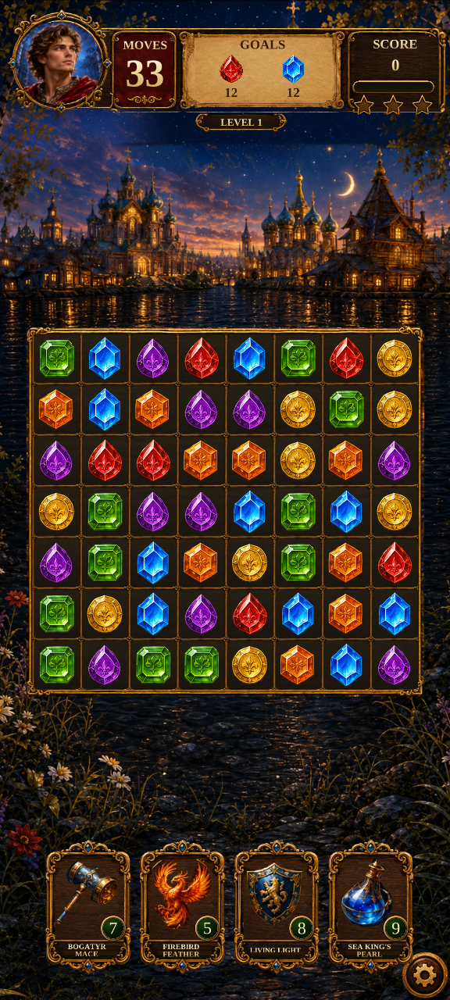

LEGENDS OF RUS · CAMPAIGN FOUNDATION R6 · 26 SEPTEMBER 2026Campaign UI and booster transactions
The approved game pages now display development campaign state and run the four existing boosters through its inventory journal. This is an opt-in development preview; the live startup remains unchanged.
Implemented page captures

Actual Unity capture · Gameplay · 576 × 1280One portrait capture is shown at a time. These are actual Unity test renders, not generated designs. The HTML viewer is not a playable game. Russian/English art, frames and fonts reuse the approved resources.
Try it in Unity
Enter Play Mode and reach Home. Choose Legends of Rus → Development → Campaign UI Preview (In Memory). Press Play to start; use Pause to resume, retry or leave the attempt. Back on Pre-Level returns to Home.
The preview creates a synthetic player in memory. It does not import your live save. Progress is discarded when the preview ends. The existing ten authored Chapter 1 rounds are available through the validated development bridge.
What changed
- Campaign energy, score, goals, rewards and booster counts feed the existing presenters and shared header.
- Booster stock is reserved before the effect and settled afterward. Command rollback refunds once; storage uncertainty blocks further actions until recovery.
- Interrupted rounds offer paid restart or end attempt. Save failures offer retry/reopen using the approved panel.
- Victory, Fail, Pause and Continue connect to campaign receipts. External bonus actions remain disabled.
Verification and limits
| Final suite | Passed |
|---|
| EditMode | 219 / 219 |
| Campaign UI PlayMode | 5 / 5 |
| Campaign board PlayMode | 2 / 2 |
| Native journeys PlayMode | 2 / 2 |
Unity 6000.5.9f1 Verify04: 219 EditMode and 9 PlayMode tests passed; zero failures or skips. Six campaign UI captures and 36 native journey captures retained.
An earlier combined PlayMode run crashed inside Unity with signal 11 and no test XML. The final suites use separate Editor processes; the crash cause remains unconfirmed.
Automated button callbacks and real board commands do not replace physical touch/device testing. No Android acceptance, full-project suite, live save migration, new 500-round content or cell-by-cell interrupted-board resume is claimed.
Next recommended step
Review the Chapter 1 opening arc and first 50-round sector plan, including the existing story beats, round-500 finale boundary, difficulty and mechanic introductions, rewards and Russian/English coverage. Approve that plan before altering accepted story scenes or enabling the expanded campaign.